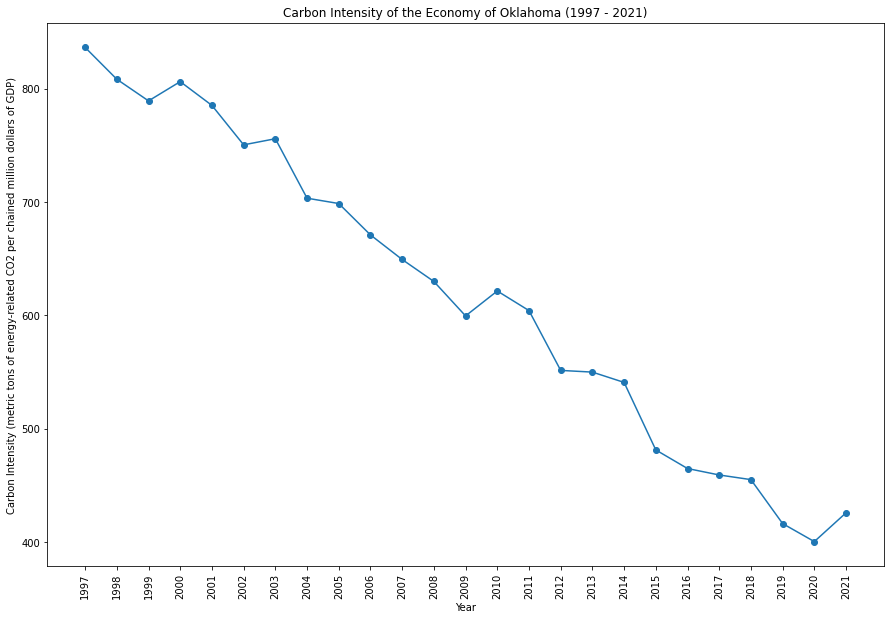
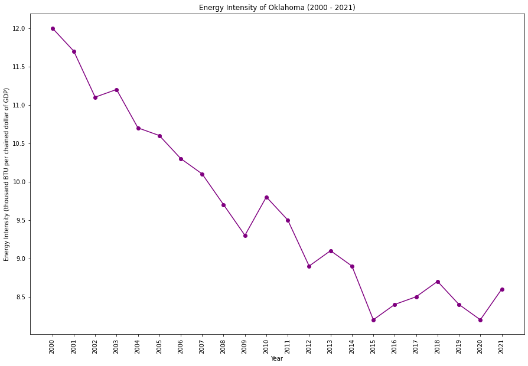

|
|
|  |  |
Oklahoma has a strong presence in the oil and gas industry, contributing significantly to the state's economy. Efforts to diversify the energy sector include an emphasis on wind energy. Balancing the economic importance of the energy industry with environmental considerations is a key challenge for the state.